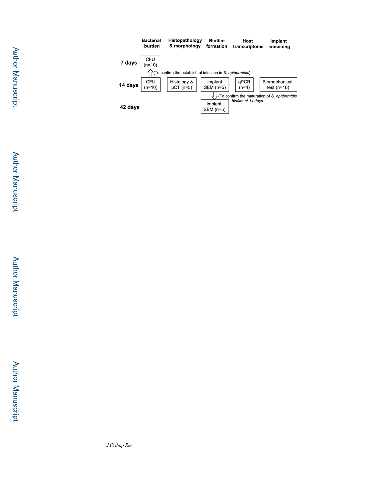

Tomizawa et al.
Page 13
Figure 1. Flow chart of each experiments.
CFU = colony forming unit, μCT = micro-computed tomography, SEM = scanning electron
microscopy, qPCR = quantitative polymerase chain reaction
J Orthop Res. Author manuscript; available in PMC 2021 April 01.